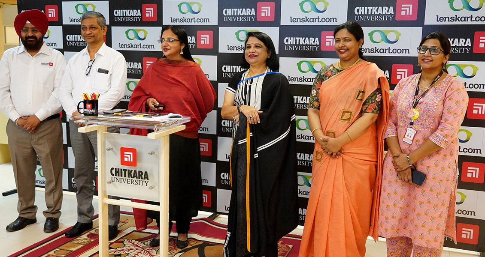
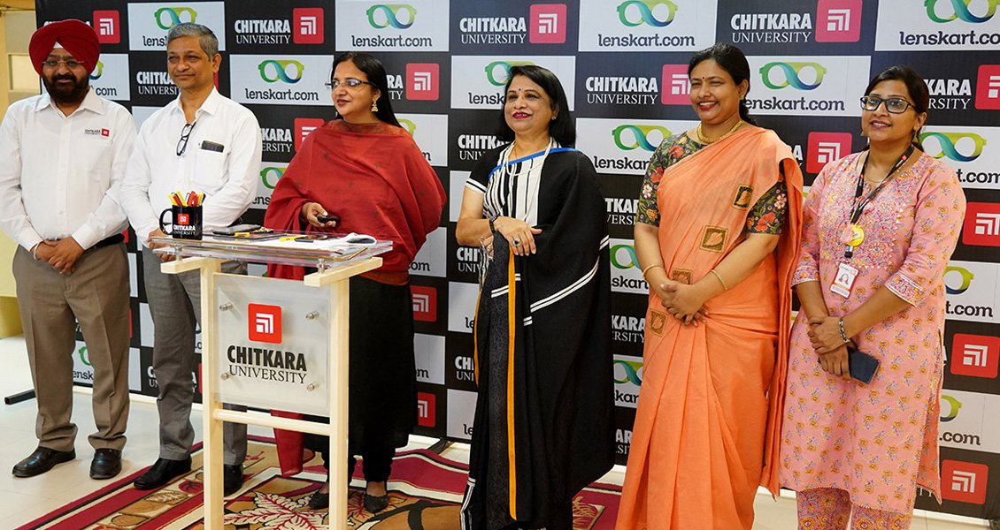
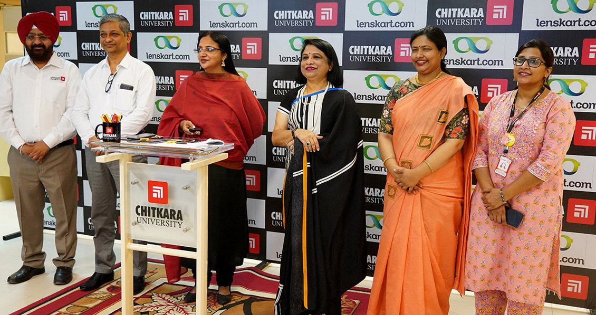

Featured articles

 



December 15, 2021 - 3 minute read
“Education is the key to unlocking the world, a passport to freedom.” – Oprah Winfrey
This quote sits particularly well for the Gen Z students who started their college over Zoom. The reopening of colleges and universities post the COVID 19 pandemic was our ticket to the desperately-sought return to relative freedom and something of the life we once knew. It’s vivid to anyone who pays a little attention that college students really looked forward to more carefree days. A time where they wouldn’t have to think twice before shaking someone’s hand and cracking a lame joke in the university cafeteria.
Coming back to Square One (quite literally) made me realise how much I learned not to take things like a cup of coffee with my friends and being denied entry to the class for being late – for granted. Little did I know that a year later I would do anything to make sure that I reach the lecture hall on time.
The first day at campus post-lockdown was like a breath of fresh air, of course with a mask on. As I stepped onto the campus, I felt overwhelmed and ecstatic. I have been desperately waiting for that moment for months now. To meet the people I had been interacting with, the professors who made sure that we got the best online learning experience and to see the campus that I had heard so much about. Coming back also brought about a little anxiety. But oh, when I entered the lecture hall. A room brimming with effervescent banter and peels of laughter. The ebullient waves of laughter drowned all my anxiety away. Returning home to the security of campus and finally getting to embrace the lifestyle and learning models we cherish left us spellbound. Now, I and my classmates fear and sometimes even chuckle at, our virtual classes being “bombed” by outsiders. Overall, we are happy to be on campus, no matter how you slice or dice that.
Featured articles
